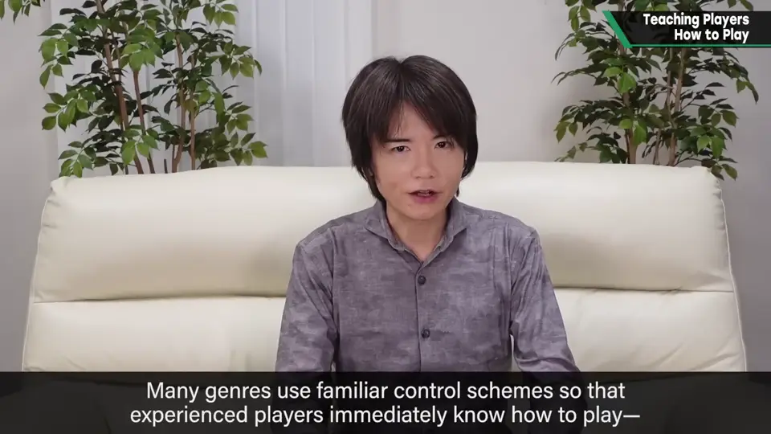
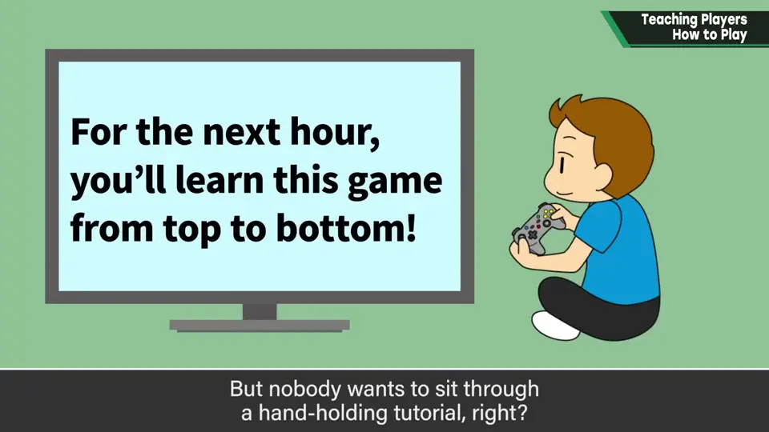
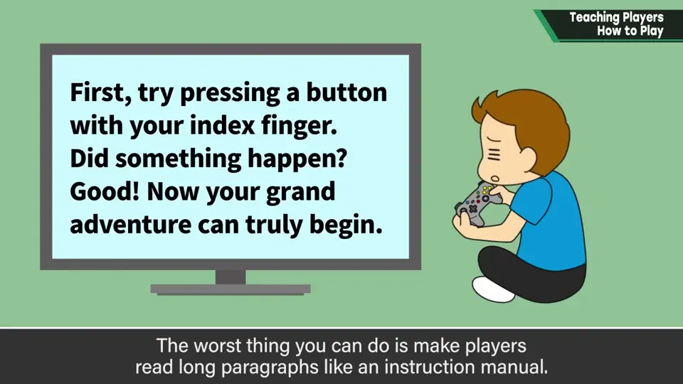
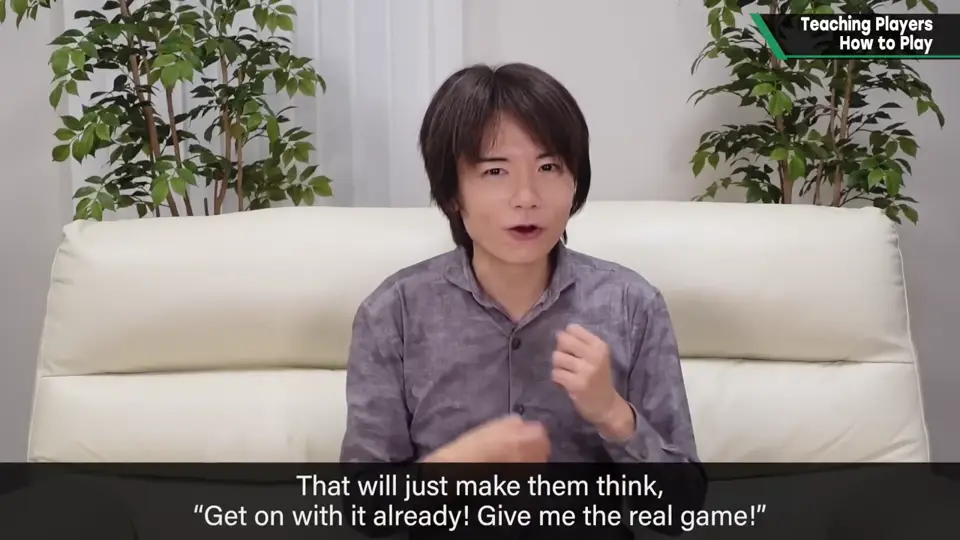
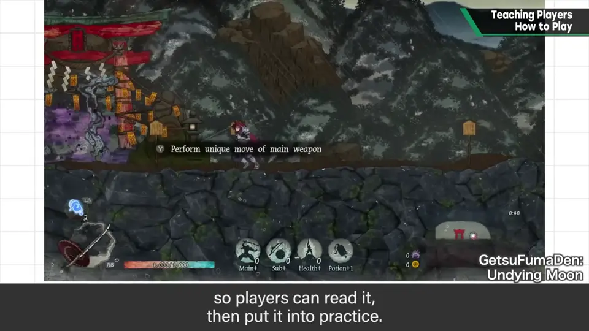
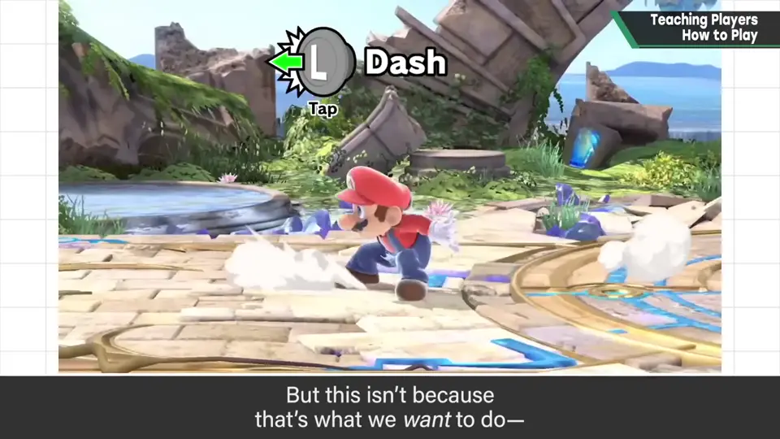
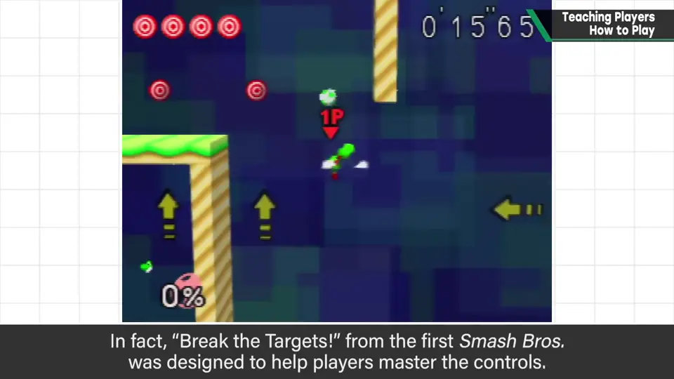
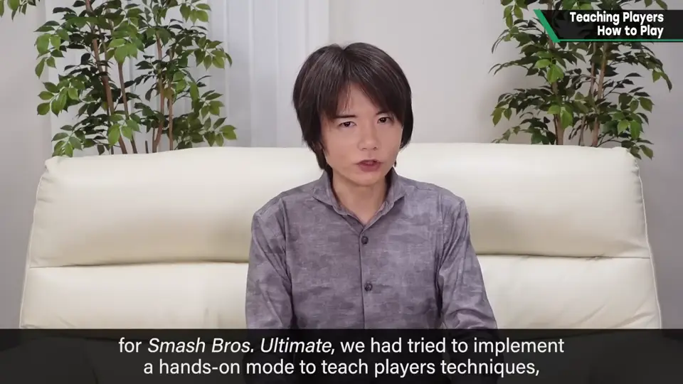

速览
游戏操作很复杂，从零教会非常困难。很多类型操作形式相似，有经验的人马上知道做什么——这类甚至是多数派。但只依赖它，游戏系统不会发展。拥有独特操作的游戏，或者即使不是、只为把规则嚼碎讲明，教程都不可或缺；可谁都不想玩麻烦的教程。最差的是让人像读说明书一样读长篇文字。比这好，但也要避免的是在练习场等无机质的地方让人操作——会让人想「快让我玩、快进入正题」。比较常见的是在第一关的路上放文字，让玩家读完马上实践；简单操作这样就够，但视类型有适合与否。《大乱斗》里只放了不可操作的演示影片，这并非他愿意如此：实际上多次企划过让玩家通过操作学习诀窍的内容，却一直没能实装。其实初代《大乱斗》的「打靶」（Break the Targets）也以熟练操作为目的布置，所以每个角色都不同。总之，让玩家主动地边玩边学很重要；樱井对此反省很多，但也不想让玩家感到拘束，相当伤脑筋。题外话：《大乱斗 特别版》曾打算实装边操作边学技巧的模式，因日程原因而流产，他至今后悔——可以说最懊悔，足见他多么想好好帮助玩家理解操作。
1. 为什么需要教程 0:04
游戏的操作很复杂，从零开始教会玩家非常困难。很多类型的操作形式相似，有经验的人马上就知道该做什么——这样的类型甚至占多数。


拥有独特操作的游戏，或者即使不是、只为了把规则嚼碎讲明白，教程都是必不可少的。可是，谁都不想玩麻烦的教程。
2. 要避免的教法 0:38
最差的，是让玩家像读说明书一样读长篇文字。
比这好，但仍想避免的，是在练习场之类无机质的地方让玩家操作——这会让人觉得「快让我玩、快进入正题吧」。


3. 比较常见的做法 0:56
比较常见的是：在第一关和路途中放置文字，让玩家读完马上实践。简单的操作这样就够了，但不同类型可能有适合与否。

4. 《大乱斗》的情况 1:06
《大乱斗》只放了不能操作的演示影片。这并非他想这样：实际上多次企划过让玩家通过操作掌握诀窍的内容，却一次也没能实装。


其实初代《大乱斗》的「打靶」（Break the Targets）也是以熟练操作为目的来布置的，所以每个角色的关卡都不一样。
这里樱井也有很多反省；但他也不想让玩家觉得被束缚，所以很是两难。
5. 至今最懊悔的事 1:47
题外话：《大乱斗 特别版》曾打算实装一个边操作边学习技巧的模式，但不是企划问题，而是日程原因，最终流产了。

他至今仍为此后悔——可以说是最懊悔的一件事。可见他有多想让玩家真正理解操作。
自测题
1. 樱井认为最差的教程方式是什么？其次要避免的呢？
最差是让玩家读说明书似的长文；其次是在无机质的练习场里操作。 0:38
2. 初代《大乱斗》的「打靶」为何每个角色都不同？
因为它是以让玩家熟练该角色操作为目的来布置的。 1:22
3. 樱井最懊悔的是什么？
《大乱斗 SP》计划的边操作边学技巧的模式因日程原因流产。 1:47